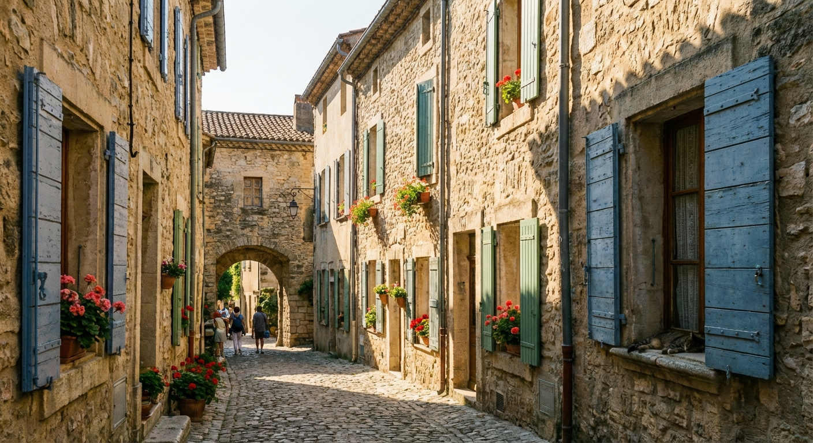

Bienvenue à Saint-Martin-de-l'Hérault
Entre garrigue et vignobles, découvrez notre village authentique du Languedoc, à deux pas de Montpellier. Un cadre de vie préservé, un patrimoine riche et des services de proximité pour tous.
Accès rapide aux services
Retrouvez l'ensemble des services municipaux et démarches administratives en quelques clics.
État civil
Actes de naissance, mariage, décès, reconnaissances, PACS et certificats divers.
En savoir plus →Urbanisme
Autorisations d'urbanisme, certificats, déclarations préalables et permis de construire.
En savoir plus →Vie scolaire
Inscriptions écoles maternelle et élémentaire, cantine, garderie et activités périscolaires.
En savoir plus →Action sociale
CCAS, aides sociales, portage de repas, logement et accompagnement des personnes âgées.
En savoir plus →Voirie & cadre de vie
Entretien de la voirie, espaces verts, propreté urbaine et gestion des déchets.
En savoir plus →Médiathèque
Prêt de livres, animations culturelles, espace numérique et ateliers pour tous les âges.
En savoir plus →Dernières actualités

Travaux de réfection rue des Vignes
La municipalité engage des travaux de rénovation complète de la rue des Vignes à partir du 24 février. Durée prévue : 6 semaines.

Inscriptions scolaires 2026-2027
Les inscriptions pour la rentrée scolaire 2026-2027 sont ouvertes. Rendez-vous en mairie avec le livret de famille et un justificatif de domicile.

Nouvelle navette vers Montpellier
Dès le 1er mars 2026, une nouvelle ligne de transport reliera Saint-Martin à Montpellier avec 4 allées-retours quotidiens en semaine.
Prochains événements
Conseil municipal
Séance publique du conseil municipal à 18h30 en salle du conseil. Ordre du jour disponible en mairie.
Loto de l'APE
Grand loto annuel organisé par l'association des parents d'élèves. Nombreux lots à gagner, buvette et pâtisseries sur place.
Randonnée découverte de la garrigue
Partez à la découverte des sentiers de la garrigue avec un guide naturaliste. Circuit de 12 km, niveau moyen. Inscription obligatoire.